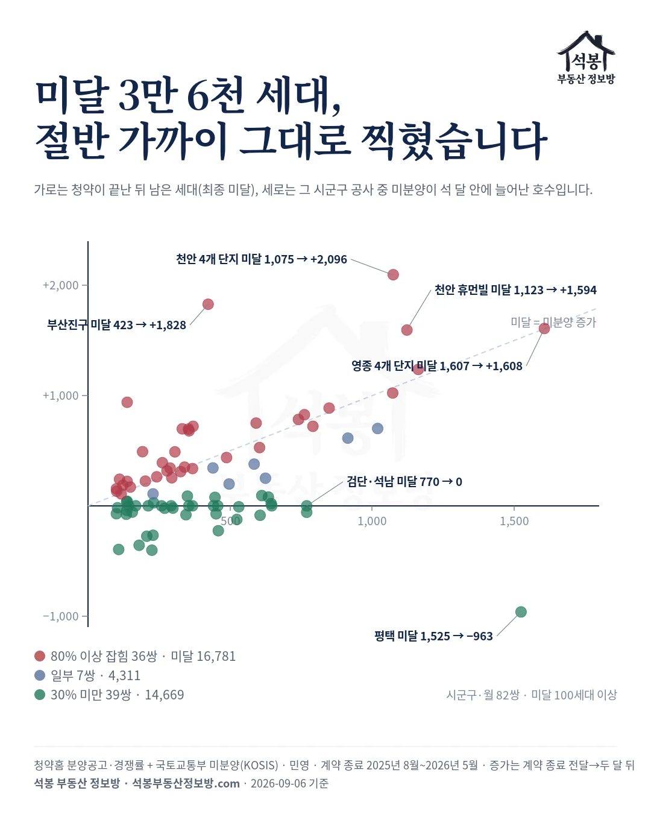
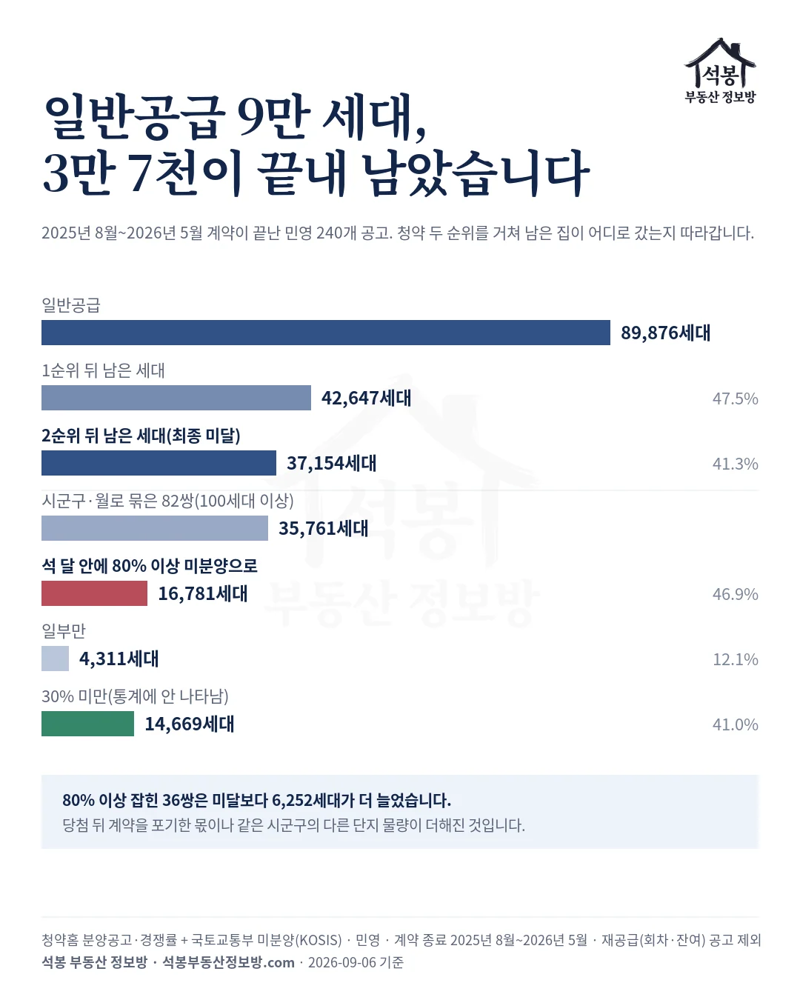
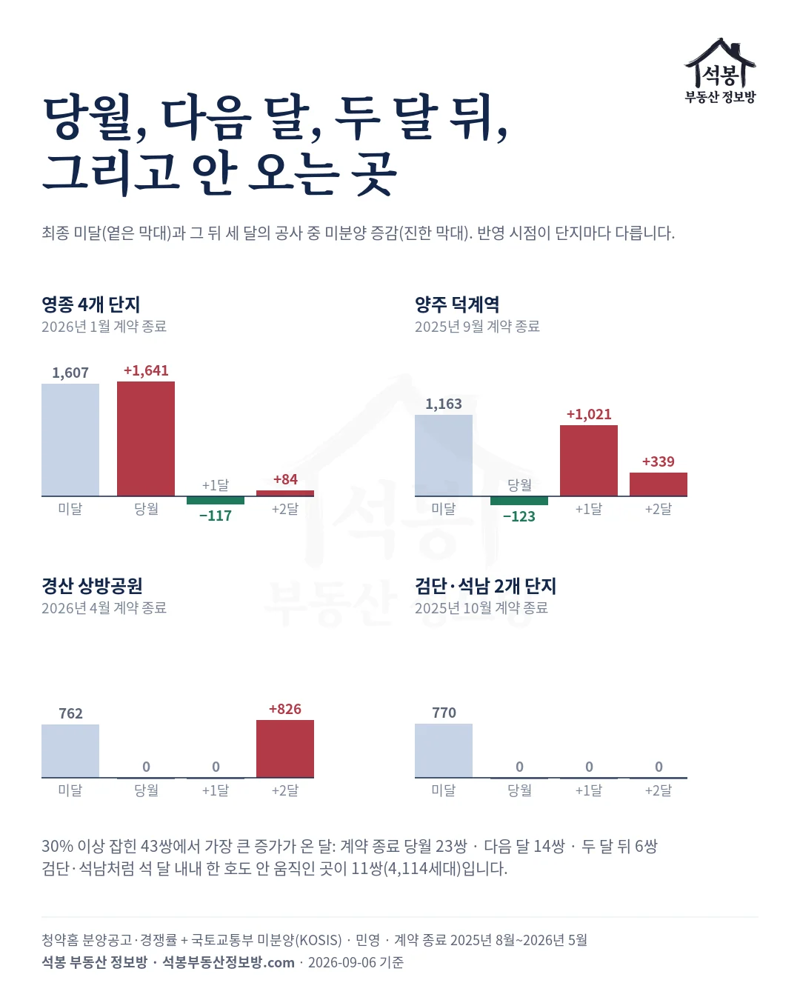
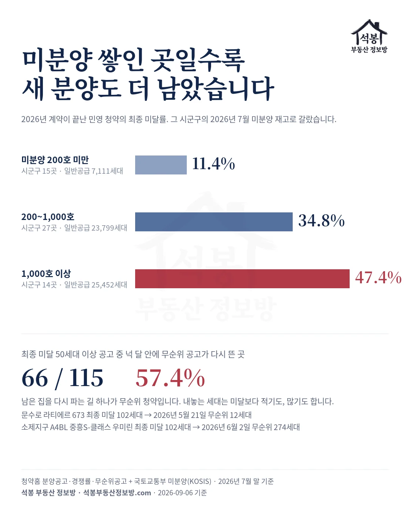

1편 「미분양은 3년째 제자리인데, 다 지은 미분양은 4배가 됐습니다」에 이어 2편 「전국은 5,973호 늘었는데, 61곳이 쌓고 99곳이 털었습니다」는 질문 하나를 남기고 끝났습니다. 청약에서 미달난 단지는 그대로 미분양이 되는가. 이번에는 청약홈 경쟁률과 국토교통부 미분양 통계를 동네(시군구) 단위로 맞대 봤습니다.
2025년 8월부터 2026년 5월 사이에 계약이 끝난 민영 청약 240곳에서 37,154세대가 2순위까지 받고도 남았습니다. 그중 한 동네에서 100세대 넘게 남은 82곳, 35,761세대를 따라가 보니 절반 가까운 16,781세대는 석 달 안에 그 동네 미분양에 그대로 찍혔고, 4할인 14,669세대는 통계에 나타나지 않았습니다.
하나. 「미달」이 무엇인지부터
이 글의 최종 미달은 일반공급에서 1순위와 2순위 접수를 다 받고도 남은 세대입니다. 예비당첨자 계약이나 특별공급은 세지 않았습니다.
계약이 2025년 8월부터 2026년 5월 사이에 끝난 민영 공고는 240개, 일반공급 89,876세대입니다. 1순위가 끝났을 때 42,647세대(47.5%)가 남았고, 2순위가 5,493세대를 채워 최종 미달은 37,154세대, 41.3%입니다. 미달이 한 세대도 없던 공고는 240개 중 98개뿐입니다.
가입하시면 지역 시장조사 보고서(약식)를 2회 무료로 요청하실 수 있습니다.
둘. 절반 가까이는 그대로 찍혔습니다
확인하는 방법은 단순합니다. 어떤 동네에서 청약 미달이 1,000세대 났다면, 그 동네의 미분양 통계도 곧 1,000호쯤 늘어야 합니다. 그래서 미달이 100세대 넘게 난 동네 82곳(같은 동네가 다른 달에 또 나오면 따로 셌습니다), 미달 35,761세대에 대해 계약이 끝난 달 앞뒤 석 달 동안 그 동네 공사 중 미분양이 실제로 얼마나 늘었는지를 봤습니다.
미달난 만큼 미분양이 늘어난 동네가 36곳입니다. 미달 16,781세대에 미분양 증가 23,033호로, 청약 결과가 미분양 통계에 그대로 옮겨 적힌 셈입니다. 미달의 80% 이상이 늘어난 곳을 여기에 넣었습니다.
반대로 미달은 났는데 미분양은 거의 안 늘어난 동네가 39곳입니다. 미달 14,669세대인데 미분양은 오히려 3,167호 줄었습니다. 미달의 30%도 안 늘어난 곳들이고, 그 사이에 걸친 동네가 7곳 4,311세대입니다.
첫 무리에서 미분양이 미달보다 6,252호 더 는 것은 이상한 일이 아닙니다. 청약에 당첨되고도 계약을 안 하면 그 집도 미분양이 되고, 같은 동네에서 같은 무렵 계약이 끝난 다른 단지 물량도 같은 통계에 얹히기 때문입니다. 천안 휴먼빌 퍼스트시티는 2025년 11월 계약이 끝났고 미달 1,123세대였는데, 그 달 천안 공사 중 미분양이 1,533호 늘었습니다.
영종은 2026년 1월에 네 단지 계약이 함께 끝났고 미달을 합치면 1,607세대인데, 그 달 옛 중구·동구의 공사 중 미분양이 1,641호 늘었습니다. 2편에서 본 영종의 2026년 1월 계단이 바로 이것입니다. 부산 사상구 더파크 비스타동원도 2025년 11월 미달 741세대에 그 달 사상구 공사 중 미분양 837호 증가로, 청약 결과가 곧 미분양 통계였습니다.

셋. 나타나지 않은 4할
미달은 났는데 미분양이 안 늘어난 39곳, 14,669세대는 모양이 셋입니다. 첫째, 석 달 내내 그 동네 공사 중 미분양이 한 호도 안 움직인 곳이 11곳, 4,114세대입니다. 인천 검단·석남의 두 단지가 2025년 10월 770세대를 남겼는데 인천 서구 공사 중 미분양은 0에서 0이었고, 수원 네 단지 442세대(2025년 12월), 화성 두 단지 143세대(2026년 5월)도 자국이 없습니다. 고령 457세대, 강화 355세대처럼 미분양이 거의 0이던 군에서도 통계는 0 그대로였습니다.
둘째, 미분양이 오히려 줄어든 곳이 20곳, 7,361세대입니다. 그 동네에 원래 쌓여 있던 미분양이 팔리면서 새 미달을 덮은 것으로, 20곳 중 7곳은 기존 재고가 1,000호 넘는 곳입니다. 평택 브레인시티 비스타동원이 2025년 12월 1,525세대를 남겼지만 평택 공사 중 미분양은 석 달 동안 963호 줄었습니다.
셋째, 나머지 8곳은 조금 늘긴 했지만 미달의 30%에 못 미쳤습니다. 왜 안 나타났는지는 이 두 통계로는 알 수 없습니다. 예비당첨자와 무순위로 계약이 됐을 수도, 신고가 안 됐을 수도, 기존 재고 매각에 묻혔을 수도 있어서 이 글은 「통계에 안 나타났다」까지만 말합니다.

넷. 찍힌다면 언제 찍히나
미달이 미분양으로 나타난 43곳에서 가장 크게 늘어난 달이 언제였는지 세면 계약이 끝난 그 달이 23곳, 다음 달이 14곳, 두 달 뒤가 6곳입니다. 절반 남짓은 바로 그 달 통계에 들어가고, 나머지는 한두 달 뒤에 옵니다.
| 단지 | 계약 종료 | 일반공급 | 1순위 뒤 남은 세대 | 최종 미달 | 가장 크게 는 달 |
|---|---|---|---|---|---|
| 천안 휴먼빌 퍼스트시티 | 2025년 11월 | 1,222 | 1,150 | 1,123 | 당월 |
| 지웰 엘리움 양주 덕계역 | 2025년 9월 | 1,319 | 1,201 | 1,163 | 다음 달 |
| 영종 4개 단지 | 2026년 1월 | 2,112 | 1,770 | 1,607 | 당월 |
| 더파크 비스타동원(사상) | 2025년 11월 | 835 | 761 | 741 | 당월 |
| 경산 상방공원 호반써밋 1단지 | 2026년 4월 | 983 | 823 | 762 | 두 달 뒤 |
| 브레인시티 비스타동원(평택) | 2025년 12월 | 1,577 | 1,551 | 1,525 | 안 나타남 |
| 석남역 그랑베르·검단 센트레빌 | 2025년 10월 | 1,401 | 862 | 770 | 안 나타남 |
| 북오산자이 드포레 | 2026년 7월 | 1,401 | 1,183 | 1,136 | 당월 |
양주 덕계역은 2025년 9월에 계약이 끝났는데 9월 양주 공사 중 미분양은 123호 줄었고, 10월에 1,021호, 11월에 339호가 들어왔습니다. 경산은 2026년 4월 종료 뒤 4월과 5월이 0이다가 6월에 826호가 한 번에 올라왔습니다. 둘 다 합치면 미달과 거의 같은 수이고, 달만 밀린 것입니다.
북오산자이 드포레는 집계 기간 뒤인 2026년 7월에 계약이 끝나 위 82곳에는 없지만, 미달 1,136세대에 7월 오산 공사 중 미분양이 1,051호 늘었습니다. 2편에서 본 오산의 7월 계단이 이 단지입니다.

다섯. 쌓인 곳일수록 새 분양도 남습니다
2026년에 계약이 끝난 공고를 그 동네의 2026년 7월 미분양 재고로 갈라 봤습니다. 재고 1,000호 이상인 동네 14곳은 일반공급 25,452세대 중 47.4%가 최종 미달이었고, 200~1,000호인 27곳은 34.8%, 200호 미만인 15곳은 11.4%였습니다. 이미 미분양이 쌓인 동네에서 새로 분양하면 둘 중 하나 가까이 남고, 재고가 없는 동네에서는 열에 하나가 남습니다.
남은 집을 다시 파는 길 하나가 무순위 청약입니다. 최종 미달이 50세대 이상인 공고 115개 중 66개, 57.4%는 당첨자 발표 뒤 넉 달 안에 무순위 공고가 다시 떴습니다. 내놓는 세대는 미달보다 적기도(울산 문수로 라티에르 673, 미달 102세대에 5월 21일 무순위 12세대), 많기도(여수 소제지구 A4블록, 미달 102세대에 6월 2일 무순위 274세대) 합니다.

세 편을 묶으면
1편은 전국 미분양 총량이 3년째 제자리인데 다 지은 미분양이 4배가 된 것, 2편은 그 아래에서 61곳이 쌓고 99곳이 털었고 쌓인 것의 83.5%가 공사 중 물량인 것이었습니다. 3편은 그 공사 중 물량이 어디서 오는지를 청약 쪽에서 확인한 것입니다.
청약에서 남은 세대의 절반 가까이는 석 달 안에 미분양 통계에 그대로 찍히고, 4할은 나타나지 않습니다. 어느 달 미분양이 계단으로 오르면 그 동네에서 한두 달 전에 계약이 끝난 청약 결과를 보면 되고, 거꾸로 재고가 쌓인 동네의 새 분양은 절반 가까이 남는다고 보면 됩니다.
원자료: 청약홈 분양공고·경쟁률·무순위공고(민영, 계약 종료 2025년 8월~2026년 5월, 240개 공고) + 국토교통부 「미분양주택현황보고」 시군구별·공사완료후(KOSIS, 2026년 7월 말 기준)
최종 미달은 일반공급에서 1·2순위 접수를 다 뺀 세대(청약홈 경쟁률표 누적 △). 회차·잔여·무순위·분양전환 공고 4건 제외. 공사 중 미분양 = 전체 − 준공 후
「곳」은 같은 시군구·같은 달 계약 종료 공고의 묶음(다른 달이면 따로 셈), 증가는 계약 종료 전달~두 달 뒤 세 달 변동 합. 재고별 미달률은 2026년 1~7월 계약 종료분, 일반공급 150세대 이상 시군구. 무순위 후속은 당첨자 발표 뒤 120일 안의 무순위 공고 유무
⚠️미분양은 사업주체 신고 자료라 신고되지 않은 물량은 잡히지 않고, 같은 시군구의 다른 단지 물량이 섞일 수 있습니다. 투자 권유가 아닙니다.